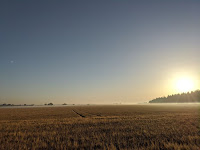
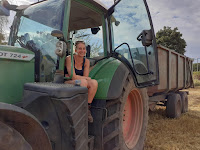
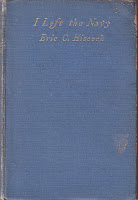
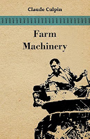
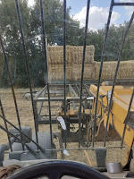
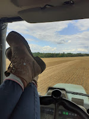

 |
| The scent of dew on barley (photo credit Jack Thorogood) |
{kind=link}
Regularly at this time of year I snuff the air for that warm, baked biscuit smell and listen out for the rumble of heavy machinery hurrying past or working late into the evening until the dew falls. Harvest hymns run on a loop inside my head as the fields open yet more widely to the sky. Harvest feels purposeful, potentially triumphant, but breath-holdingly tense. This is a triumph that won’t be earned until the last load has been brought in. There’s no other moment quite like it. It's a vestigial response from forgotten generations of farming ancestors and the period when I was living in a farming family and would likely be found packing a basket at tea time and hurrying to the field with a flask and sandwiches and the children clamouring to be lifted up for a ride.
Two things prompt this month’s blog (three, if you count
Francis’s barely concealed expression of dismay when I threatened to re-share
something John’s Campaign-y. He was right of course; there’s been a lot too
much of that these last weeks – though with reason, I insist.) The first was
the fact that now Georgeanna is not a full-time racecourse executive and her
next music festival is not imminent, she appears to have become an agricultural
casual, liable to be called on for corn cart or baler duties. The second was a unexpected diversion with my current WW2 naval research.
 |
| C21st land girl Georgeanna (photo credit Tessa Thorogood) |
{kind=link}
Eric Hiscock, famous in sailing circles for his pioneering
circumnavigations with his wife Susan, tried and failed to be accepted into the
RNVR (his eyesight was too poor). Then almost by accident he found a space on
board a requisitioned anti-submarine yacht as the second engineer. In his pre-war sailing career
he had prided himself on never installing an auxiliary
but “Well I did once have a motor-bicycle.”
The opening chapter of his 1946 memoir I Left the Navy (1946) describes a routine patrol where depth
charges must launched for the first time. Hiscock is in the engine room, so can
see nothing. “I could not help wondering
once again during those tense moments what the effect on a ship as slow and as
lightly built as ours would be when a depth charge was dropped in comparatively
shallow water.” They survive, the U-boat doesn’t but all too soon afterwards
Hiscock’s defective eyesight is discovered during a routine medical
examination. “Why! you’re half blind, man. How did you get into the service?”
Despite his two years’ successful work and promotion to Chief Engineer, Hiscock
is discharged. After a period in a pulpboard mill he and Susan find themselves simultaneously
renovating a derelict cottage, unexpectedly inheriting the editorship of a
yachting magazine whilst working long hours on the land.
 |
My current favourite book production style |
{kind=link}
 |
| Classic book 1944 edition |
{kind=link}
I stood on the bagging
platform which was attached to the side of the machine opposite to the knife
with a great pile of bags beside me. The grain tank in front of me had to metal
spouts fitted with sliding doors, beneath which I fixed the bags on spikes with
their mouths held open; as soon as one had been filled I closed the spout and
opened the other one, removed the full bag, tied up its mouth and pitched it
down the platform chute. Then, by the time I had fastened another bag in its
place, it was time to remove the other one. With a heavy crop such as we were
dealing with that morning, it was fast and continuous work; a bag containing
about 100 lbs, was filled every 50 seconds, and one had to work quickly without
a hitch to avoid an overflow of grain. But that was one of the most
satisfactory jobs I had ever done: I regarded each bag tied as one more bag of
bread filched directly from the very mouth of the weather; nothing could take
that from us now, even if it snowed.
That’s the feeling, exactly. But, inevitably, there’s a
breakdown. The storm is coming closer. A dash back to the farmyard reveals that
the essential spare part is itself in need of repair. (Any farming household
will recognise this scenario.) Hiscock must take charge of the dryer – a very
modern but home-built and temperamental innovation – while George, the sweating
dusty farmer, must mend the spare part, rush it to the field in his car and get
the process going again before the storm breaks.
If you sense I find this obscurely thrilling, yes I do. Though
I’ve absolutely no desire ever to be involved again directly, I love seeing
Georgeanna set out for her 2020 stint on the corn cart and I come bumping home
exhausted but happy with the Hiscocks and their fellow workers at the end of
the 1940s day.
 |
| what Georgeanna drives |
{kind=link}
We all climbed into
the trailer and set off homeward. The party grew smaller as we rumbled along,
some getting off at the Burial Path and the remainder at various preselected
gaps in the hedges from which they would plod their way by the nearest routes
back to their cottage doors; so eventually only Susan and I were left to bump
up the lane in the waning light and park the tractor and trailer in the
cartshed.
George had stopped the
drier, the barn doors were closed and the homestead lay hushed and sleeping,
save for an owl which hooted eerily from a roof top as we made our way too the
garden gate.
 |
| c21st land girl takes a break |
{kind=link}